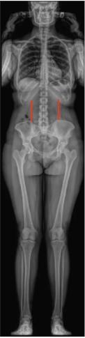

1) Description of Measurement
The Rib–Pelvis Distance (also called the Costopelvic Distance) is a linear coronal-plane measurement used in severe thoracic or thoracolumbar scoliosis to assess trunk height loss, spinal flexibility, and preoperative surgical planning.
It quantifies the vertical gap between the lowest rib margin and the iliac crest on the concave side of the deformity. A reduced distance indicates rib–pelvis impingement, which may contribute to flank pain, rib deformity, or restrictive pulmonary mechanics.
This measure provides an indirect estimate of curve stiffness and helps predict the amount of correction achievable with traction or surgical release.
2) Instructions to Measure
3) Normal vs. Pathologic Ranges
Key point: A distance < 2 cm often correlates with rigid curves, requiring more extensive surgical correction or osteotomy to restore trunk height and coronal balance.
4) Important References
Siminoski K, Warshawski RS, Jen H, Lee KC. Accuracy of physical examination using the rib-pelvis distance for detection of lumbar vertebral fractures. Am J Med. 2003 Aug 15;115(3):233-6. doi: 10.1016/s0002-9343(03)00299-7.
Marks M, Petcharaporn M, Betz RR, et al. Outcomes of surgical treatment in male versus female adolescent idiopathic scoliosis patients. Spine (Phila Pa 1976). 2007 Mar 1;32(5):544-9. doi: 10.1097/01.brs.0000256908.51822.6e.
Mizukami S, Abe Y, Tsujimoto R, et al. Accuracy of spinal curvature assessed by a computer-assisted device and anthropometric indicators in discriminating vertebral fractures among individuals with back pain. Osteoporos Int. 2014 Jun;25(6):1727-34. doi: 10.1007/s00198-014-2680-y.
Suk SI, Lee SM, Chung ER, et al. Determination of distal fusion level with segmental pedicle screw fixation in single thoracic idiopathic scoliosis. Spine (Phila Pa 1976). 2003 Mar 1;28(5):484-91. doi: 10.1097/01.BRS.0000048653.75549.40.
5) Other info....
The Rib–Pelvis Distance is especially useful in thoracolumbar and lumbar scoliosis to gauge space for corrective maneuvers and to determine whether rib resection or spinal height restoration is necessary.
Reduction in this distance correlates with loss of trunk height, lumbar curve rigidity, and pelvic obliquity.
It can guide intraoperative traction and instrumentation strategy by identifying curves requiring greater distraction.
On the convex side, the distance is typically larger; measurement should be taken on the concave (compressed) side for consistency.
In severe neuromuscular or degenerative scoliosis, restoration of ≥ 2–3 cm of rib–pelvis space intraoperatively often corresponds to improved sitting balance and pain reduction.
When using EOS or stitched long-cassette radiographs, ensure true coronal alignment (no rotation) for reproducibility.
MRI or CT may further delineate rib impingement or costovertebral deformity in preoperative planning.